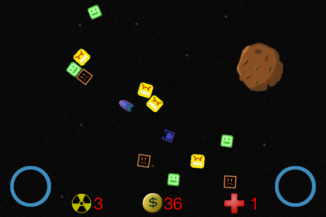

This game was developed solely by me using c++/c and SDL as the API. I do not have any plans to publish the game and constructed it for the fun of programming and the awesome learning experience. Some things to note are its heavy use in Polymorphism, Containers, Memory Management, and Threading. The video covers most of the key concepts involved so check it out.
I created this media player for the soul purpose of having greater management over my music. The layout and functionality is similar to iTunes but it has some additional features like hotkeys for inserting songs into playlists or checkmarks to see which playlist a song is in. Speed was a big concern while implementing this media player. When a user adds music to the library, all the information for each song is calculated only once (not each time myTunes start) then stored in a hashmap that way I can access information in constant time. Also, I do not copy the songs to a folder, rather I copy the address then load it when the user wants to play. Lastly, when I save the information, I serialize it that way it loads fast. Two of the most difficult things to implement were the regex filter for the search bar and the multithreading for playing the sound.

This is my latest project I am working on. It is a multi-directional shooter developed for the iOS platform. The game is played with two joysticks, one for moving and the other for shooting. Enemies are generated at random until the space ship gets hit. The rate at which the enemies generates increases as time goes by. Lastly, if the player wants, he or she can unleash an atomic bomb to destroy all the enemies at once.
This algorithm could identify the letters written in a picture. It was actually one of the first programs I developed as a Mechanical engineering undergrad and purely for fun. Here is how I did it. It assumes only letters are written in a picture so right away I throw out two of the color matrices in the rgb matrix provided. Then I apply a filter to make the remaining elements in the matrix either 0 or 255. Then I go through each one of the rows in the matrix and find all the places were it changes from having values to no values. These changes mark a line with text from white space. what is store all the lines in a matrix and then go through each line to find the spaces between the letters and save all the letters to a matrix. Then I apply a normalizing scheme to make all the letters the same size. I do that step so my algorithm can analyze different fonts. Then I compare each letter to a template of the alphabet to find which letter it closely resembles. You can find it here on Matlab central as well as some of my first programs with Matlab.
Click on each picture to begin playing the game on another
page. The description for each game is also posted there.
This is the only project that I actually made for a school project but I did the extra credit so I wanted to share it. It was made using c++, glut and openGl and works by taking a triangular mesh and applying Phong smooth shading. Additionally it can rotate, translate and use level subdivision to transform the original mesh into a finer mesh. The extra credit was to apply smooth shading which was very difficult since all the normals for each point had to be linearly interpolated. I also wrote text to screen and applied optimizations like boundary boxes to make the program run faster. This was not required but I did so for the fun of it.
A big passion of mine is music so much so that I think I am partially deaf from always blasting my stereo or headphones. I enjoy just about every single genre but listen to house the most since it takes elements from all genres and mashes them together. Anyways, I produce house and similar genres in my spare time. You can check out a few of my songs here. This is main reason why I created myTunes and why my mario game has an awesome sound track and sound effects :)